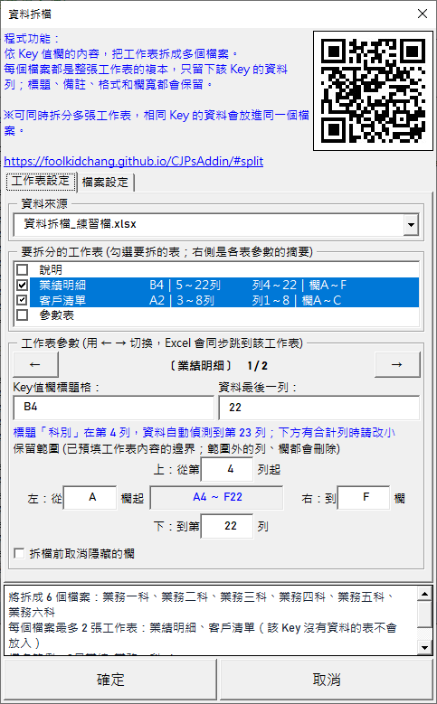
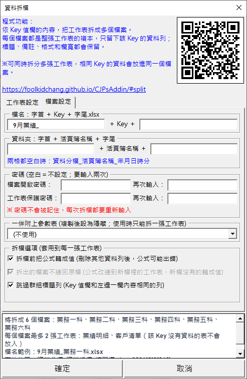

Excel 依欄位拆成多個檔案：一張報表依科別拆檔，各自寄出
一張業績報表裡有好幾個單位的資料，要分別寄給各單位：手動做就是篩選、複製、開新檔、貼上、存檔，有幾個單位就重複幾次。CJP 增益集 (CJPsAddin，免費的 Excel VBA Add-in) 的資料拆檔，依 Key 值欄 (例如「科別」) 的內容，一個 Key 拆成一個檔案。每個檔案都是整張工作表的複本，只留下該 Key 的資料列，標題、格式、欄寬都會保留。
適合這些時候用
- 各科的業績明細，拆給各科主管
- 各分行的報表，拆檔後分別寄出
- 拆好的檔案，要加上開啟密碼
- 每個單位要收到好幾張表 (例如明細＋客戶清單)：同時拆好幾張工作表，相同 Key 的資料會放進同一個檔案
用 CJP 增益集：設定一次就好
- 在增益集選單「常用功能二」點資料拆檔，勾選要拆的工作表
- Key值欄標題格：雙擊後用滑鼠點標題，例如「科別」。資料最後一列會自動偵測，下方有合計列時要改小
- 保留範圍 (選用)：依上下左右排成十字，範圍外的列、欄都會刪除。例如上方的報表標題、下方的簽核欄、右邊的內部備註欄
- 在「檔案設定」填檔名的前後文字 (例如「9月業績_業務一科.xlsx」)，需要時設定檔案開啟密碼
- 視窗下方會預覽拆成幾個檔案，確認後按「確定」
設定會記在工作表裡，下次開啟自動帶入 (密碼除外)。設定有問題時，預覽會變成紅字說明原因，「確定」不能按。


檔案設定
- 檔名：字首＋Key＋字尾，例如「9月業績_業務一科.xlsx」
- 資料夾：建在原檔所在的資料夾裡
- 密碼：檔案開啟密碼和工作表保護密碼都要輸入兩次，避免打錯；密碼不會被記住
- 公式轉成值：刪掉其他 Key 的資料後，公式可能算錯或變成
#REF!，勾選可以避免 - 跳過群組標題列：Key 值欄和左邊一欄內容相同的列 (例如「北區｜北區」) 不當成一個 Key
要記住的 4 件事
- 資料要先依 Key 值欄排序：相同 Key 的資料要連在一起，否則會被擋下 (跳列)
- 資料最後一列下方的內容 (合計、簽核欄) 不屬於任何 Key，會原樣出現在每個檔案；不要的話用保留範圍「下」刪掉
- 拆檔前會先檢查全部的 Key：空白、錯誤值、檔名不能用的字元。有問題時一個檔案都還沒產生就會提示
- 拆出的是整張表的複本，格式、欄寬、隱藏欄都保留；有公式時，建議勾選「公式轉成值」
常見問題
報表前幾列是標題和日期，拆出的檔案不想要怎麼辦？
用保留範圍「上」填標題列。例如標題列在第 4 列，填「上：從第 4 列起」，上面的列都會刪除。
同一個科別的資料沒有排在一起，會怎樣？
還沒產生任何檔案就會提示「跳列」，請先依 Key 值欄排序再拆檔。程式不會自動排序。
可以幫每個檔案加密碼嗎？
可以。「檔案設定」可以設定檔案開啟密碼和工作表保護密碼，每個拆出的檔案都會套用。
要付費嗎？公司電腦可以裝嗎？
免費。安裝方式和注意事項請看安裝方式。增益集會刪除資料列、產生檔案，使用前請先備份。